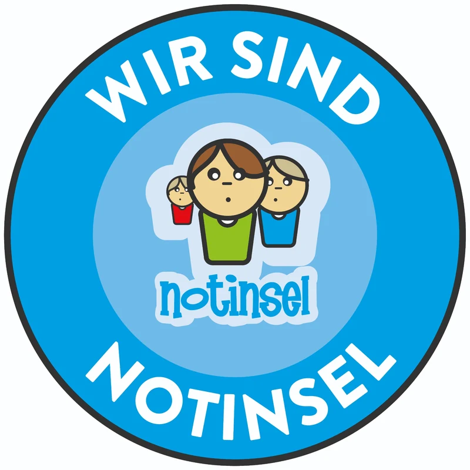
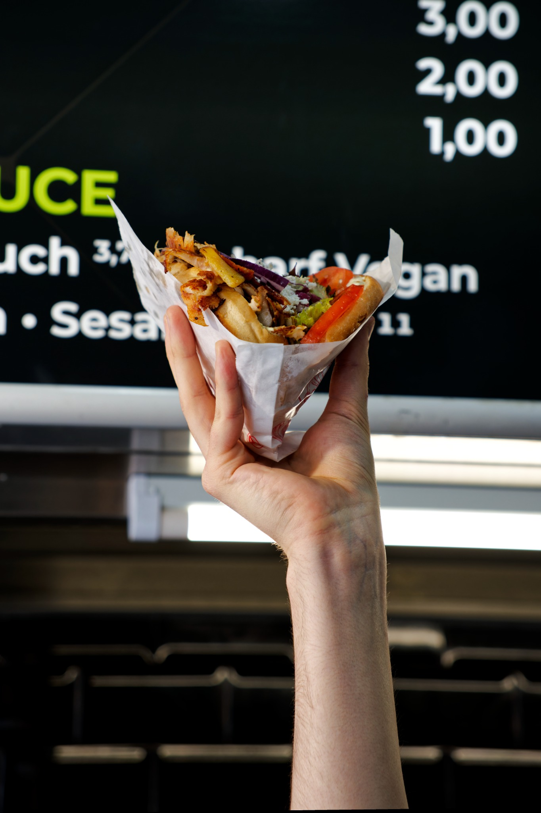
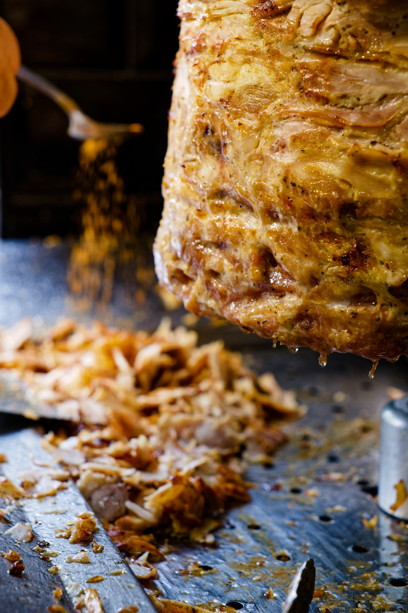

Notinsel-Partner
Ein sicherer Ort für Kinder und Jugendliche.
Wer Hilfe braucht, ist bei uns willkommen. Wir hören zu, helfen weiter und sind da, wenn es darauf ankommt.
Original Chicken Gemüse Kebab
Frisch vor Ort gebacken, mit gebratenem Gemüse und ausgewählten Zutaten. 100 % halal.



Notinsel-Partner
Wer Hilfe braucht, ist bei uns willkommen. Wir hören zu, helfen weiter und sind da, wenn es darauf ankommt.
Sultan online
Sieh dir an, wie wir backen, schneiden und servieren. Online bekommst du den Vorgeschmack – frisch bei uns vor Ort schmeckt es am besten.

Frisch vom Spieß
Heiß, saftig und direkt ins frisch gebackene Brot.
So arbeiten wir bei Sultan →Hier findest du uns